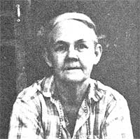

Profiles
George Washington Stone, he makes canes; June Soper, living in a tipi; Richard Mitchell, he writes 'The Underground Grammarian,' in his efforts to eliminate muddled writing; Verna Mae Slone, she wrote a book describing her proud mountain heritage titled 'What My Heart Wants to Tell'.
By George Washington Stone: Cane Craft
November/December 1979
In celebration of little-known MOTHER-type folks from all over.
George Washington Stone has spent 80 of his 90, years whittling, sanding, and handing out canes. "I learned the skill from my grandfather," Stone remembers. "The Civil War left him with a leg wound, so Granddad taught himself to make his own walking sticks. He'd go out into the woods, bend a sapling, and leave it to grow in that shape for a year."
George, on the other hand, goes into the forest, gathers his raw material-soften hickory or box elder-bends the green limbs around a post in his back yard, and leaves 'em for a month to six weeks . . . till the hook becomes permanent. Then the nonagenarian works the wood over with his pocketknife and sandpaper . . . and adds the finishing- touch with a coat of varnish.
But the-craftsman refuses to sell-or even trade for-his handmade canes. "Makes me feel good to give 'em to those that need 'em," Stone explains. "Walk. Ing's about the best thing you can do for your health . . . I'm just trying to help keep folks on their toes! "-Marti Cyrus Attoun.
JUNE SOPER: TIPI RESIDENT
What's so unusual about an Indian living in a tipi? Well-for one thing-June Soper is only part Cherokee Indian, and for another, Cherokees don't traditional: ly live in tipis at all! Ms. Soper chose her present abode back in August 19", because she was unable to obtain suitable work and housing . . . as a result, she's convinced, of widespread discrimination against Indians. So June put to use the experience she had accumulated while building tipis for local tribal functions . . . and fabricated what was to become her permanent home.
At present; Ms. Soper is writing a book about her tipi-dwelling experience . . . the first draft of which begins, "Many times I've been asked why I moved into a tips. My answer can only be this: I gave up a lot when I changed my abode . . . raking leaves, mowing lawns, shoveling snow, and dealing with nosy neighbors. And all that I've gained in return for my 'losses' are pure air and water, wild foods and flowers, and excellent physical and mental health! "-Dave Epperson.
RICHARD MITCHELL: THE UNDERGROUND GRAMMARIAN
There's a remarkable publication circulating around campus at New Jersey's Glassboro State College, which has had quite an impact on the job-related writings of the college's faculty members and administrators. The journal-entitied The Underground Grammarian-is written and printed by Glassboro English professor Richard Mitchell, who sums up his viewpoint in these words: . . . clear language is not only the expression but the very origin of clear thought .... If we speak clearly the thoughts of muddled minds, we reveal that we are fools. The muddier the mind, the more it needs the shield of murky laneuaze."
Mitchell has been working to eliminate muddied writing, and he often makes his points by publishing-in the Grammarian examples from mamas and newsletters written by his fellow educators. (Though there's no charge for the journal, it's almost, impossible to get on the mailing list.. . however, Volumes l and II of the publication can be ordered on microfiches, for $5.00, from the Microfilming Corporation of America, Dept. TMEN, P.O. Box 10, 1820 Hawkins Avenue, Sanford, North Carolina 27330. Subsequent volumes will be available on microfiches for $3.00 apiece.)
As a result of Professor Mitchell's efforts, Glassboro's teachers and officials have begun to simplify their voiding, pay closer attention to grammar, spend more time proofreading their work, and -as an unexpected bonus-eliminate unnecessary memos. "It is the responsibility of the press," declares The Underground Grammarian, "to expose public things to public scrutiny . . . gamblers of thought and language fear only one thing -an informed and irate public."-JV.
VERNA MAE SLONE: WHAT MY HEART WANTS TO TELL
In her rustic log cabin-tucked away in the back hills of Pippa Passes, Kentucky - 65 year old Verna Mae Slone recently wrote out, in longhand, the story of her proud mountain heritage. The manuscript was Verna Mae's way of insuring that the time-honored customs and values of turn-of-the-century Appalachia would not be forgotten.
The result is a book entitled What My Heart Wants to Tell (available for $8.95 from New Republic Books, Dept. TMEN, 122019th Street N. W. ; Suite 205, Washington, D.C. 20036) ... in large part a memoir of the author's father, Isom B. "Kitten-eye" Slone, who bequeathed to his daughter a wealth of insight into the ways of nature and of human beings. Verna describes how her father skinned hogs, drew sap from trees, logged, farmed, philosophized, and brewed his own special brand of good old-fashioned corn liquor . . . and she incorporates, throughout the volume, an abundance of mountain lore and ceremony.
"What My Heart Wants to Tell," explains Verna, "aims to set the record straight and preserve the memory of the mountain way of life. "-Fran Moshos.
GLENN AND KATHLEEN SIMMONS: HOMESTEAD ING FOR SURVIVAL
Glenn and Kathleen Simmons have lived a back-to-the-land lifestyle for as long as they can remember . . . since both of the Oregonians hail from pioneer stock. The two spent their lives creatively developing the skills of self-sufficiency . . and ultimately decided that their hardwon knowledge should be passed on to others.
The result was a series of accomplishments: a two-volume work entitled From the Ground Up (available from Glenn and Kathleen Simmons, Star Route, Box 1370, Glen-wood, Oregon 97120 for $9.75) . . . a soon-to-be-published volume, called Banquet of Bubbles, about the preparation of natural snags and other toiletries . . . and-since Glenn's retirement in 1971-a variety of classes taught by the Simmonses for several neighboring colleges. In addition, Glenn and Kathleen still manage to raise their own livestock and preserve most of the :edibles that their farmstead-which serves as a teaching model and laboratory-yields.
Moreover, the Simmonses haven't limited their concerns to the home-front: Instead, they've made every effort to put their back-to-basics lifestyle into international perspective. From' their own small corner, Glenn and Kathleen have been working hard to change the world!
Diana McLaughlin.
 |
|
 |